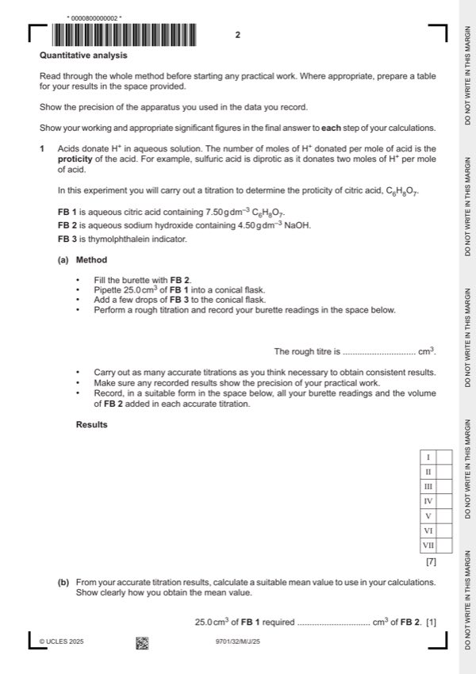
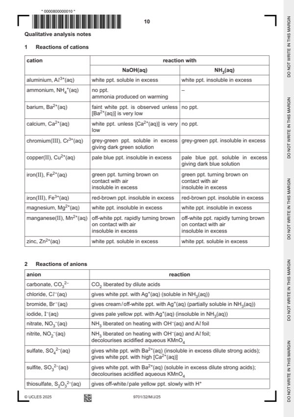

Question 1

Original paper page 2

Original paper page 10
Part 1(a) — solution
- two burette readings AND titre for the rough titration
- initial and final burette readings for two (or more) accurate titrations
- initial / start AND (burette) reading / volume
- final / end AND (burette) reading / volume
- titre OR volume used / added / OR FB 2 used / added
- unit: / cm3 OR (cm3) OR in cm3 (for each heading) OR cm3 unit given for each volume recorded
- two (or more) accurate identical titres (ignoring any that are labelled ‘rough’), then
- two (or more) accurate titres within 0.05 cm3, then
- two (or more) accurate titres within 0.10 cm3, etc
Mark points
- two burette readings AND titre for the rough titration
- initial and final burette readings for two (or more) accurate titrations
- initial / start AND (burette) reading / volume
- final / end AND (burette) reading / volume
- titre OR volume used / added / OR FB 2 used / added
- unit: / cm3 OR (cm3) OR in cm3 (for each heading) OR cm3 unit given for each volume recorded
- two (or more) accurate identical titres (ignoring any that are labelled ‘rough’), then
- two (or more) accurate titres within 0.05 cm3, then
- two (or more) accurate titres within 0.10 cm3, etc
Part 1(b) — solution
- Candidate must take the average of two (or more) titres that are within a total spread of not more than 0.20 cm3
- Working/explanation must be shown OR ticks must be put next to the two (or more) accurate readings selected
- The mean should be quoted to 2 dp and be rounded to nearest 0.01 cm3. (e.g. 26.675 cm3 must be rounded to
Mark points
- Candidate must take the average of two (or more) titres that are within a total spread of not more than 0.20 cm3
- Working/explanation must be shown OR ticks must be put next to the two (or more) accurate readings selected
- The mean should be quoted to 2 dp and be rounded to nearest 0.01 cm3. (e.g. 26.675 cm3 must be rounded to
Part 1(c)(i) — solution
- [M1] Amount citric acid in titration = 25 / 1000 7.50 / 192
- [M2] 9.766 10−4 mol OR 9.77 10−4 mol
Mark points
- [M1] Amount citric acid in titration = 25 / 1000 7.50 / 192
- [M2] 9.766 10−4 mol OR 9.77 10−4 mol
Part 1(c)(ii) — solution
Answer: AND
- Amount of NaOH used = (b) / 1000 4.5 / 40 mol
Mark points
- Amount of NaOH used = (b) / 1000 4.5 / 40 mol
Part 1(c)(iii) — solution
Answer: OR stated mole ratio of 2.5 ⩽ mole ratio ⩽ 3.5 AND results support the statement / acid is triprotic. · OR stated mole ratio ⩽ 2.5 or ⩾ 3.5 AND results do not support the statement / acid is not triprotic.
- Calculated mole ratio = (c)(ii) / (c)(i) 1
Mark points
- Calculated mole ratio = (c)(ii) / (c)(i) 1
Part 1(c)(iv) — solution
- C6H8O7 + 3NaOH → C6H5O7Na3 + 3H2O
Mark points
- C6H8O7 + 3NaOH → C6H5O7Na3 + 3H2O
Part 1(c)(v) — solution
Any valid displayed/structural/skeletal formula containing 3 COOH groups 1
Expected answer is HOOCCH2C(OH)COOHCH2COOH
Mark points
- Include the ideas shown in the solution above.
Part 1(d) — solution
Answer: AND uncertainty in burette volume = 2 0.05 (which is greater than 0.06)
- AND uncertainty in burette volume = 2 0.05 (which is greater than 0.06)
Mark points
- AND uncertainty in burette volume = 2 0.05 (which is greater than 0.06)